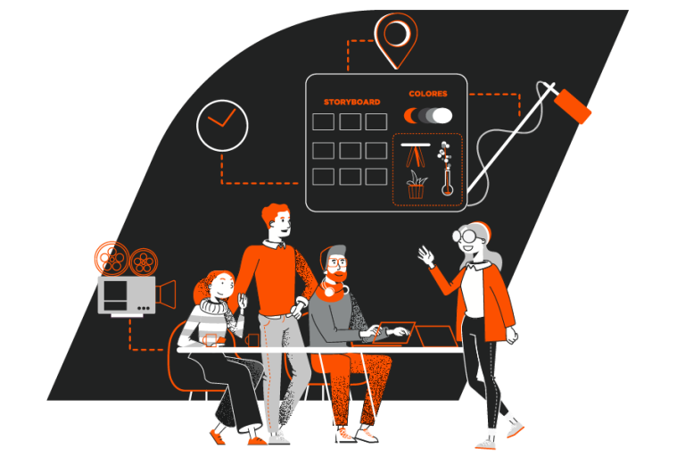
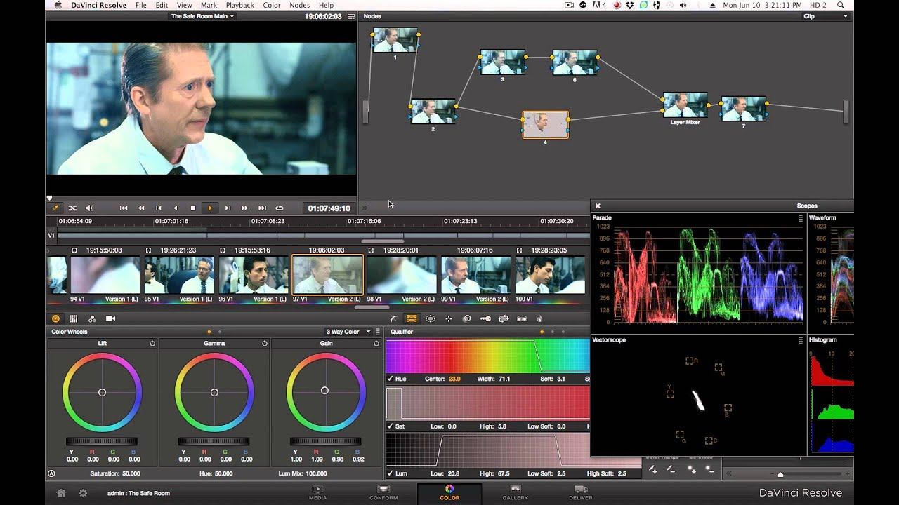

Imágenes o escenas en una película o videojuego que no pueden ser grabadas en la vida real. Esto incluye cosas como explosiones, criaturas fantásticas, paisajes futuristas y mucho más.
En esta etapa, se desarrollan los bocetos y los diseños de los efectos especiales.
Durante esta etapa, se ruedan las escenas y se recolectan los materiales necesarios para la postproducción.
En esta etapa, se utilizan técnicas de animación y edición de imágenes para crear y integrar los efectos visuales en las escenas de la película o videojuego
Se sole tener un control de calidad en todas las etapas de creación a fin de obtener el mejor resultado posible